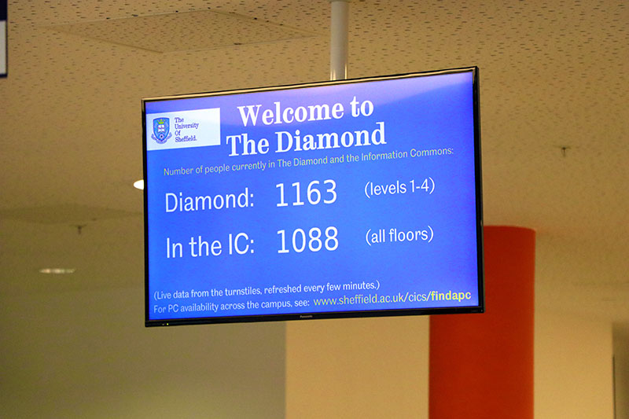

The diamond is full of lots of modern and state of the art facilities that are available for use for students. The diamond has approximately 1000 study spaces that are available for use 24/7 for any students in the university. In addition to this there are 9 lecture theatres and 11 labs. One of these labs, called the iforge , is a makerspace available to the students so that they can materials, equipment, and get support from more experienced students to create whatever they want. Whether it be for university work or personal use.
Some of the other labs that are are in the diamond include a clean room which can be used by computer science students in the first year through an optional lab in the devices and networks module to create transistors to learn about the physical make-up of computer systems.
There is also the computing and robotics lab which is used a lot during the first year for many modules but specifically the nao robots are used in the machines and intelligence module to help to learn about AI. All student computers run Windows 10 Education.
Specialist and Other Facilities
The Diamond is also home to some services which are not part of the Faculty of Engineering. This includes CiCS Creative Media, the Diamond Reference Library and Siemens MindSphere Lounge (formerly Library Connect), printing services and more.
CiCS Creative Media
Corporate Information and Computing Services provide Creative Media facilities to staff and students on Level 4 of the Diamond. These services are available for free and give access to a TV Studio, iMac edit suites and equipment loans
CiCS will allow you to book out a range of equipment for up to four full days and equipment includes DSLR cameras, HD camcorders, GoPros, Gimbals and kits for using your iPhone as a camera. There are also various accessories available for use with the equipment.

A screen located near an entrance showing how busy the Diamond and Information Commons are at present
Study Areas
The Diamond is full of study spaces on all floors except the basement. Access to these study spaces requires that you scan your uCard at the turnstiles, which passes information the the screens telling you about building occupancy.
The study areas get very busy during the day, but remember that the Diamond is a 24 hour building and is open 7 days a week so you can always go in and study at quieter times. Moonscape on the first floor is a large, open plan study space, but there are also other spaces - with study and silent study areas on both the third and fourth floors.
If you need to use a PC for your study work, your own laptop will connect to the eduroam WiFi network anywhere in the building, or you can use any of the computer labs if they are not booked for teaching. The computers in the Diamond computer labs run both Windows 10 and Ubuntu (Linux), so you can just boot up into whichever you need. You can check computer and room availability for the whole campus online or check the booking screens outside of the labs.
Library Facilities
The Diamond is not just an Engineering Building. It is also one of the buildings where you can access the University's Library Services. There are library facilities on Level 4 (the Diamond Reference Rooms and a Library Help Desk) and also on the ground floor with the Siemens MindSphere Lounge. You can order library books (from any Library building using the StarPlus website) for collection and return from the MindSphere Lounge.
Laptop Loans
You can borrow a laptop for free in the Diamond. Laptops are available from Level 4 near the Library Help Desk and can be used for up to 24 hours. The laptops connect to wireless but must not be taken outside the building. You can also borrow a laptop from any of the other library buildings including the Information Commons and Western Bank Library (8 hour loan max).
The laptops run the University Managed Desktop which means you can access all software available on a desktop CiCS machine and if the software is not already installed, install it from the Software Centre.
In the Diamond and Information Commons, the process of taking out a laptop is self service and is first come first served. In other locations, you can book in advance and will be given the laptop by a real human.
Group Rooms
You can book Group Rooms in the Diamond for working on group projects. There are rooms located on Level 3 and Level 4 which can be booked up to 48 hours in advance. These rooms are useful for working on group projects and feature large screen displays which you can connect your computer to. You can make a booking at the Resource Bookings Website.